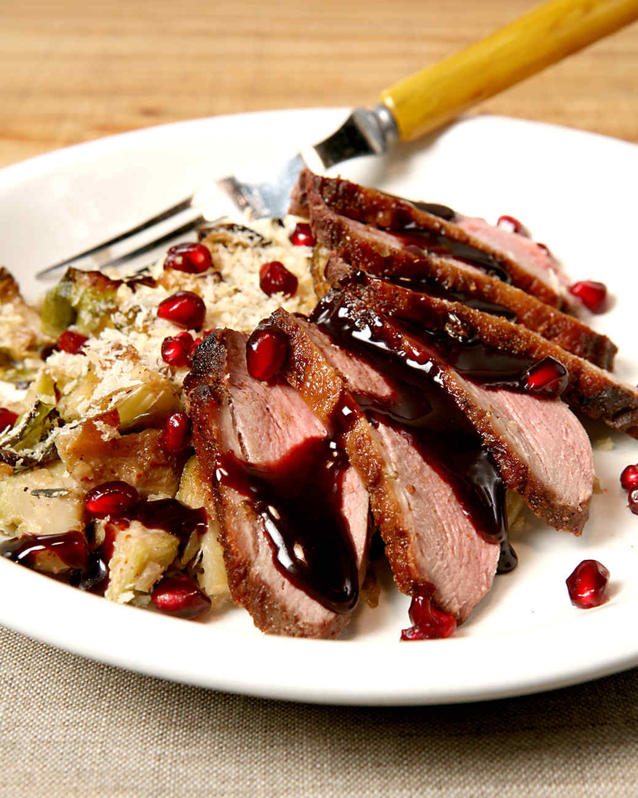

Ingredients
- 1 teaspoon ground fennel
- 3 tablespoons coarse salt
- 1/2 teaspoon ground coriander
- 1/2 teaspoon ground lavender
- Three 1- pound duck breast halves, trimmed of excess fat and scored
- Zest of 2 oranges
- 1/4 cup brandy
- 6 sprigs fresh thyme
- 1 teaspoon freshly ground black pepper
- 1 cup Pomegranate Glaze
Directions
- In a small bowl, mix together fennel, salt, lavender, and coriander. Place duck breasts, skin up, in a large dish. Sprinkle evenly with the spice mixture. Flip breasts over and place the zest, brandy, and thyme evenly on the flesh; let marinate for 30 minutes.
- Preheat oven to 350 degrees. Place the duck breasts, skin side down, in a large ovenproof skillet over medium heat. Cook until the fat is rendered and the skin is crisp and thin, about 15 minutes.
- Transfer breasts to oven and cook until pink in the center, about 4 minutes. Let duck rest for 2 minutes before slicing. Divide duck evenly among 4 serving plates and spoon over pomegranate glaze.